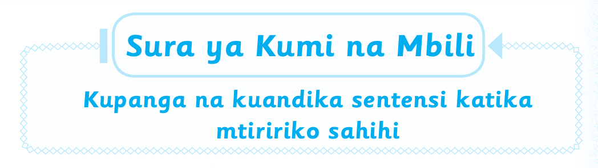

Sura ya Kumi na Mbili — Somo la kwanza

Sura ya Kumi na Mbili
Kupanga na kuandika sentensi katikamtiririko sahihi
Katika sura hii utajifunza kupanga sentensi katika mtiririko
sahihi. Utatumia picha na sentensi zilizochanganywa.
Vilevile, utaandika hadithi fupi unayoifahamu. Hadithi
itaandikwa kwa mtiririko sahihi wa matukio.
Somo la kwanza
Kupanga sentensi zilizochanganywa
Katika somo hili utajifunza kupanga sentensi
zilizochanganywa. Lengo likiwa kupata sentensi zenye
mtiririko sahihi.
Mfano
Sentensi zilizochanganywa Sentensi zilizopangwa
1. Ninakwenda shuleni. 1. Ninaamka asubuhi na
mapema.
2. Ninakunywa uji. 2. Ninapiga mswaki na
kuoga.
3. Ninaamka asubuhi na 3. Ninavaa sare ya shule.
mapema.
4. Ninavaa sare ya shule. 4. Ninakunywa uji.
5. Ninapiga mswaki na 5. Ninakwenda shuleni.
kuoga.